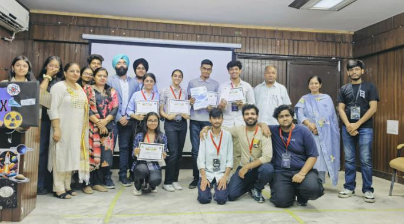
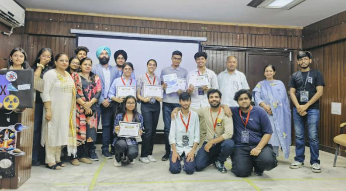

QubitX - Flagship Annual Event
About QubitX
QubitX, the flagship annual event hosted by Quantum Quorum, was a dynamic confluence of science, innovation, and collaboration. Designed to inspire original thinking, the event brought together budding physicists, engineers, and innovators for a day packed with hands-on ideation and learning.
Workshop Highlights
The event opened with an insightful workshop delivered by Prof. Dr. Ashok Kumar, a renowned physicist. He shared valuable knowledge on quantum mechanics, nanotechnology, data science, and sustainable tech — showing students how physics is at the core of future innovation. His session sparked meaningful questions and genuine curiosity from attendees.
The Ideathon
The second half of QubitX challenged participants with an ideathon — where teams brainstormed and presented creative, feasible physics-based solutions to real-world challenges. Ideas ranged from sustainable energy models and low-cost scientific devices to AI-powered physical simulations.
The ideathon was judged by Dr. Jaswant Singh, a distinguished expert in applied physics. Teams were evaluated on creativity, feasibility, impact, and scientific accuracy. His feedback provided immense value and encouraged participants to continue refining their ideas.
Event Impact
- High turnout of students from diverse departments and years
- Enthusiastic participation in both workshop and ideathon
- Interactive sessions, discussions, and networking breaks
- Recognition of the best ideas in the awards ceremony
- Seamless coordination by Quantum Quorum members and volunteers
Participant Stats
- 60+ teams registered, totaling around 350 candidates
- Shortlisting round conducted to evaluate idea feasibility and relevance
- 12 finalist teams selected for the ideathon
- 40 participants competed in the final round
- Interdisciplinary participation from various departments and years
- Event judged and attended by esteemed faculty members
Event Image Gallery
 
